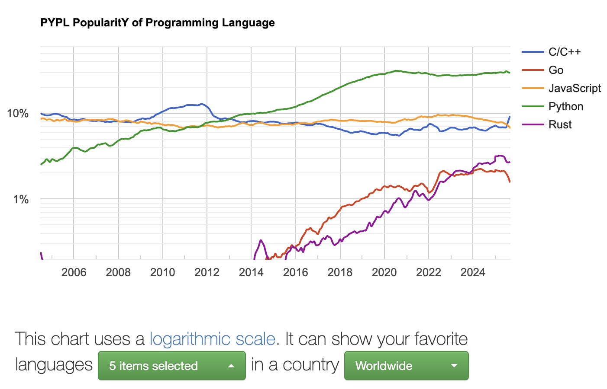

1 What is Python?
Before we begin, it is important to get some context about what we’re about to learn. We’ll begin by answering some questions that you may not have ever considered, even if you’ve written Python before.
- Where did Python come from?
- Why learn Python?
- What kind of language is Python?
- Is Python “complete”?
Where did Python come from?
Python is just over 30 years old, and came from humble beginnings as an educational language.
As of 2025 Python is by many measures, the most popular programming language in the world.
Some popular measures:


As you can see, the language has grown in an unrivaled manner. First a big surge in 2004, and then exponential growth since the mid-2010s.
Python 1.0 was released in 1994. Guido von Rossum was working on the Computer Programming 4 Everyone (CP4E) initiative at Corporation for National Research Initiatives in Reston, VA. The language remained fairly obscure for about a decade.
Python 2.0 was released in the year 2000, moving the language closer to what it is today. It was Python 2.4, around 2004 when the language really started to find its first major niche as a language for general-purpose scripting and web programming.
Python 3.0, released in 2008, was a major backwards-incompatible change. It improved many long-standing issues with the language, but developers had to update their existing code from Python 2 to Python 3. There were plenty of articles at the time about this “blunder” and how Python would likely fail as a result. For those of us writing Python back then, the transition was a rocky one, but such a transition today would be unthinkable given the remarkable growth of the past decade.
Why Python?
How did Python grow from an obscure teaching language to one of the number one languages in the world?
Python’s early adopters (like yours truly) largely favored Python for its:
- relatively simple & readable syntax, and culture of writing clean, maintainable code
- powerful “standard library”, code that comes pre-installed with the language to perform a wide variety of tasks
- pragmatic, multi-paradigm approach to programming (object-oriented vs functional; interactive vs script)
- extensibility due to a powerful internal data model and C API
Python’s growth in the last few years can be attributed to many factors:
- its role in data science and machine learning pipelines, which have become ubiquitous in the past decade.
- a network effect, more Python developers means it is easier to hire Python developers, and so there are more Python jobs, so in turn, more Python developers.
- relatedly, the number of open source Python libraries has skyrocketed. As we’ll see in this course it is now possible to find Python libraries for just about anything from audio to games, data science to web programming, or any obscure interest or hobby you may have.
- as a result of the huge number of users, lots of attention has been put into improving the development experience and performance of Python.
Learning Python today is a good career choice, but it also provides a great foundation to explore different programming paradigms & specializations.
What kind of language is Python?
In a typical Python introduction you’ll see it described as an interpreted & dynamically typed language.
You’ll also sometimes hear languages defined in terms of being object-oriented, functional, or procedural. While languages like C, C++, and Java all have strong foundations in a single paradigm, Python is somewhat agnostic on this front. This course will take advantage of that fact to introduce you to these three styles (paradigms) of programming.
Python is also written with a focus on readability. You’ll see people talk about code being Pythonic. These ideas shape the culture of Python.
Is Python complete?
After seeing the history above, you may wonder, is Python “complete”?
Python has reached a level of maturity and stability where breaking changes to the core language are rare. Still, every October a new version of Python is released (for example, 3.13, 3.14, and so on). As a mature language, each Python release is supported for about five years.
This does not mean that code you write today will stop working in five years, but that you’d need to update the version you use for security updates. Python you wrote targeting Python 3.10 will probably work just fine on 3.14 without changes, as the language is backwards-compatible.
New versions focus on performance, developer experience (e.g. nicer error messages and REPLs), and occasionally will add new features. They may also deprecate or prune old lesser-used libraries from the standard library.
While we’ll use 3.13 in this class, most of the features we are learning were present as of 3.9 if not far longer.
Is Python slow?
You may come across articles claiming Python is slow, or not suited to production.
This was a common refrain circa 2010. Today however, enormous web properties like YouTube and Instagram are powered by Python. The open source community, as well as companies like Microsoft and Google have poured resources into improving Python’s performance.
New releases add features, recent version of Python have introduced type-checking, improved concurrency, and major performance enhancements.
If you are curious, take a look at https://docs.python.org/3.14/whatsnew/3.14.html to see what was added in Python 3.14.
An Open Source, Community Language
Python is an open source language and is developed in a public Git repository with public forums and email lists. Anyone can learn to contribute to Python, as long as they follow the community’s procedures and guidelines.
Most programming languages have cultures with values that guide the development of the language.
Some of the key values of Python’s culture:
- Python’s community started as beginner-friendly and kept that tone. The community takes being welcoming and inclusive seriously.
- The community embraces openness, proposals to improve the language come from all over, and there’s a focus on encouraging users to contribute back to the project.
- Python is a language that values readability, code is written for people as much as it is for computers to understand, Python takes this extremely seriously.
import thisThe Zen of Python, by Tim Peters
Beautiful is better than ugly.
Explicit is better than implicit.
Simple is better than complex.
Complex is better than complicated.
Flat is better than nested.
Sparse is better than dense.
Readability counts.
Special cases aren't special enough to break the rules.
Although practicality beats purity.
Errors should never pass silently.
Unless explicitly silenced.
In the face of ambiguity, refuse the temptation to guess.
There should be one-- and preferably only one --obvious way to do it.
Although that way may not be obvious at first unless you're Dutch.
Now is better than never.
Although never is often better than *right* now.
If the implementation is hard to explain, it's a bad idea.
If the implementation is easy to explain, it may be a good idea.
Namespaces are one honking great idea -- let's do more of those!